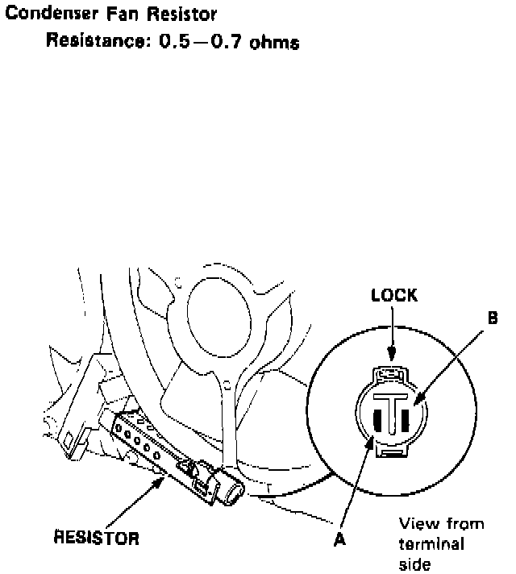
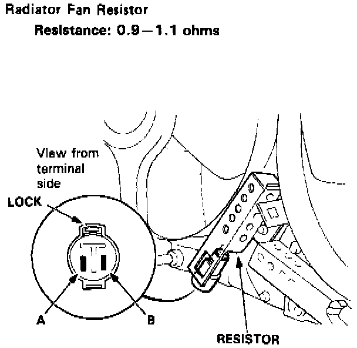

Condenser Fan Resistor: Testing and Inspection

CONDENSER FAN RESISTOR TEST
1. Disconnect the 2-P connector from the resistor.
2. Using an ohmmeter, measure resistance between the A and B terminals. Replace the resistor if the resistance is not within specifications.
Resistance: 0.5 - 0.7 ohms
NOTE: Resistance will vary with the resistor temperature; specifications are at 20°C (70° F).

RADIATOR FAN RESISTOR TEST
1. Disconnect the 2-P connector from the resistor.
2. Using an ohmmeter, measure resistance between the A and B terminals. Replace the resistor if the resistance is not within specifications.
Resistance: 0.9 - 1.1 ohms
NOTE: Resistance will vary with the resistor temperature; specifications are at 20°C (70° F).